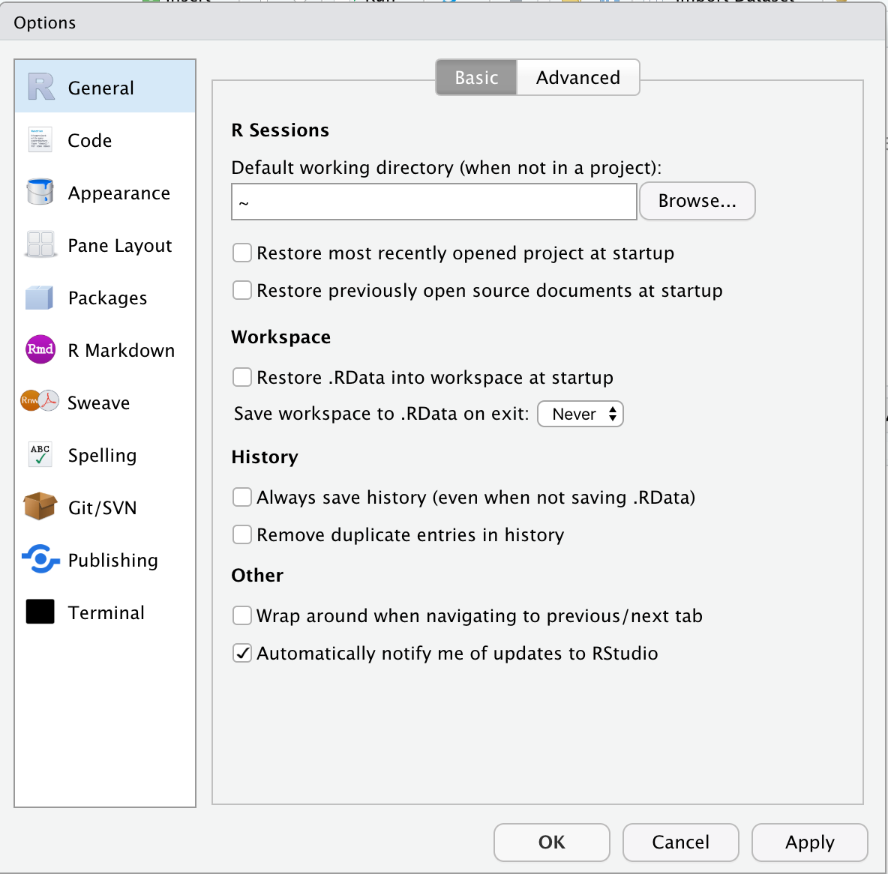

Chapter 3 R Basics
3.1 Let’s get started with RStudio
- Quick tour of RStudio’s UI
- Let’s plot a thing (below)
- Some idiosyncracies of my code
'rather than"##for documentation comment=not<-for assignment
- Essential Global Options
- Never save .Rdata, load workspace

Figure 3.1: Recommended RStudio configuration
- Super useful keyboard commands:
- Insert a pipe: ⌘+Shift+m
- Comment/uncomment: ⌘+Shift+c
- Tools \(\to\) Modify Keyboard Shortcuts…
- ⌘+1, ⌘+2, ⌘+3
- Cheatsheet: https://raw.githubusercontent.com/rstudio/cheatsheets/master/rstudio-ide.pdf
library(tidyverse)
library(gapminder)
data(gapminder) ## Gets a dataset from a loaded package
gapminder
?gapminder
ggplot(data = gapminder, aes(x = gdpPercap, y = lifeExp, color = continent,
size = log10(pop))) +
geom_point() +
facet_wrap(vars(continent))
ggplot(data = gapminder, aes(x = year, y = lifeExp, color = continent)) +
geom_line(aes(group = country)) +
facet_wrap(vars(continent))3.1.1 Exercise
Moar plots
Selecting variables, and some common math functions
3.1.2 Exercise
Calculate correlations between life expectancy, population, and GDP per capita
3.2 Base R data types
3.2.2 Vectors
3.2.3 Strings
3.2.4 Factors
3.2.5 Lists
3.2.6 Data frames
gapminderis a data frame- Technical point: a data frame is a list
- “Columns” = list elements
- Restriction: all of the elements must have the same length
- A tibble (
tbl_df) is a data frame with nice printing (part of the tidyverse)- Plus some technical restrictions that make it nicer to work with
Like 99% of the time you create a data frame by loading data or manipulating another data frame. But it’s good to know how to create them by hand:
3.3 Examining variables
length(),dim()str()class()head()- challenge
3.3.1 Exercise
- What’s the difference between
gapminder['country'](single brackets) andgapminder[['country']](double brackets)?
3.4 Logical operators
if (TRUE) {
print('it\'s true!')
} else {
print('it\'s false!')
}
foo = c(1, -1, -3)
foo > 0
if (foo > 0) {
print('greater than zero!')
}
if (any(foo > 0)) {
print('at least one is greater than zero!')
}
if (all(foo > 0)) {
print('all are greater than zero!')
} else {
print('at least one is not greater than zero!')
}
if (foo > 0 | foo < 0) {
print('non-zero')
}
if (foo > 0 || foo < 0) {
print('non-zero')
}
if (foo != 0) {
print('non-zero')
}
if (all(foo != 0)) {
print('non-zero')
}
bar = c(17, 25, 0, -14)
ifelse(bar > 0, 'positive', 'negative or zero')
case_when(bar > 0 ~ 'positive',
bar == 0 ~ 'zero',
bar < 0 ~ 'negative')3.5 Missing data
https://gge-ucd.github.io/R-DAVIS/lesson_how_r_thinks_about_data.html#missing_data
3.5.1 Exercise
- What do the logical operators do with
NAs?